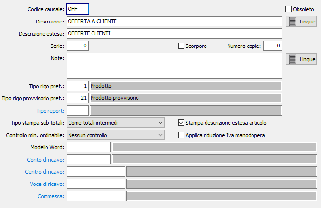

Causali offerte
Le causali offerte vengono utilizzate al momento dell’inserimento di un documento e ne determinano la tipologia.
E’ possibile gestire più causali di offerte, e più numerazioni progressive (serie).

CODICE: Codice alfanumerico di 3 caratteri, a libera scelta dell'utente, per individuare la causale attiva. Sul campo sono attive le funzioni di ricerca (F9) sulla tabella stessa.
OBSOLETO: flag attivabile dall’utente per inibire il possibile utilizzo dell’elemento di tabella in esame nelle successive transazioni.
DESCRIZIONE: Campo alfanumerico di 30 caratteri per inserire la descrizione della causale attiva. Questa descrizione viene stampata sui documenti se il programma di stampa lo prevede.
DESCRIZIONE ESTESA: Campo alfanumerico di 60 caratteri per inserire la descrizione estera della causale attiva ad uso interno dell’utente. Questa descrizione non viene stampata sui documenti ma viene visualizzata nelle viste.
SERIE: Campo numerico per inserire il numero di serie del documento. Ciascuna serie attiva una propria numerazione di documenti. E’ necessario, in fase di immissione del documento, per proporre automaticamente e correttamente il numero progressivo del documento acquisito dalla tabella protocolli.
SCORPORO: Definisce se il documento è soggetto a scorporo dell'Iva dal totale del documento in fase di registrazione (casella con segno di spunta). In questo caso i prezzi inseriti nel documenti saranno al lordo di Iva.
NUMERO COPIE: Indicare il numero di copie da stampare, se zero saranno stampate le copie previste sull'anagrafica del cliente.
NOTE: Campo note a disposizione dell’utente.
TIPO RIGO PREF.: Campo numerico che indica il tipo rigo da proporre sulle offerte emesse con questa causale.
TIPO RIGO PROVVISORIO PREF.: Campo numerico che indica il tipo rigo da proporre sulle offerte emesse con questa causale e relative a clienti provvisori.
TIPO REPORT: consente di specificare un tipo di report specifico per i documenti che saranno emessi utilizzando questa causale. Sul campo sono attive le funzioni di ricerca (F9).
TIPO STAMPA SUB TOTALI: Definisce il metodo di stampa dei sub totali sul documento: come totali intermedi, al termine viene stampato il totale generale; come totali alternativi, al termine non viene stampato il totale generale.
CONTROLLO MIN. ORDINABILE: Indica se e quale controllo utilizzare sul documento relativamente alla quantità minima ordinabile del prodotto:
Nessun controllo
Controllo non vincolante
Controllo vincolante
STAMPA DESCRIZIONE ESTESA ARTICOLO: Indica se sull'offerta deve essere riportata e stampata la descrizione estesa dell'articolo, casella con segno di spunta.
APPLICA RIDUZIONE IVA MANODOPERA: Se spuntato indica che il documento creato con questa causale è soggetto ad IVA agevolata su ristrutturazioni.
MODELLO WORD: Indica l'eventuale codice del modello da utilizzare per la stampa tramite Word.
CONTO DI RICAVO: eventuale codice alfanumerico di 8 caratteri, presente in piano dei conti, per definire il sottoconto contabile di ricavo a cui verrà associato il rigo del documento. Sul campo sono attive le funzioni di ricerca (F9) e manutenzione (CTRL+W) sulla tabella stessa.
CENTRO DI RICAVO: campo significativo solo in presenza del modulo Contabilità analitica opportunamente configurato. Può contenere un codice alfanumerico di 15 caratteri, per definire il centro di ricavo a cui verrà associato il rigo del documento. Sul campo sono attive le funzioni di ricerca (F9) e manutenzione (CTRL+W) sulla tabella stessa.
VOCE DI RICAVO: campo significativo solo in presenza del modulo Contabilità analitica opportunamente configurato. Può contenere un codice alfanumerico di 15 caratteri, per definire la voce di ricavo a cui verrà associato il rigo del documento. Sul campo sono attive le funzioni di ricerca (F9) e manutenzione (CTRL+W) sulla tabella stessa.
COMMESSA: campo significativo solo in presenza del modulo Contabilità analitica opportunamente configurato. Può contenere un codice alfanumerico di 15 caratteri, per definire la commessa a cui verrà associato il rigo del documento. Sul campo sono attive le funzioni di ricerca (F9) e manutenzione (CTRL+W) sulla tabella stessa.